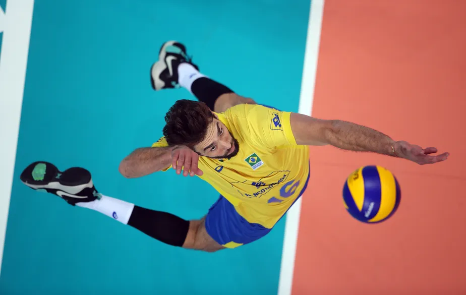
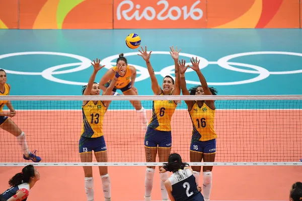

- Os fundamentos do vôlei são:
- Saque
- Recepção
- Levantamento
- Ataque
- Bloqueio
Cada jogada do vôlei tem início com o saque. O sacador, como é chamado o jogador que lança a bola, tem que arremessar a bola por cima da rede e dentro da quadra de seu adversário. Se ele ultrapassar o limite, a bola vai retornar para seu adversário sacar. Note que quando a bola toca no chão do time adversário, ocorre a marcação de pontos. A chamada “zona de saque” representa o local onde o jogador (sacador) deve permanecer para lançar a bola. Trata-se de uma área de 9 metros de largura situada após cada linha de fundo.
Os jogadores recebem o saque através do fundamento da recepção, geralmente feita através de recursos como a manchete ou o toque.

Os levantadores, como o próprio nome já indica, levantam a bola com a ponta dos dedos. Em seguida, passam aos atacantes, que tentam marcar pontos lançando a bola para o campo adversário.

Os atacantes, com um grande salto, lançam a bola com muita força para o campo adversário, com o objetivo de fazer a bola tocar o chão da equipe adversária, e assim, fazer o ponto.

No entanto, os adversários podem realizar um bloqueio ou uma defesa para evitar que a bola toque no chão da equipe após o ataque. Observe que os bloqueios são realizados por dois ou mais jogadores que estão posicionados próximos da rede. Sendo assim, para se defender contra o ataque do adversário, eles saltam no mesmo momento.
